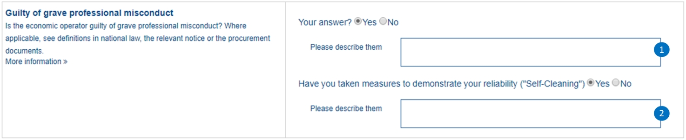

4.5 Misconduct
Related information requirements
See formal requirements related to exclusion grounds criteria in the BIS 41 - European Single Procurement Document (Version 2.0.0), and more specifically tbr070-013.
Mock-ups - buyer perspective

Figure 69. 'Professional misconduct' criterion mock-up - buyer perspective
Mock-ups - economic operator perspective
| Beware that this mock-up is not showing the national criteria. For this mock-up it is presumed that by answering 'Yes' to the general EU criterion all the national criteria QUESTION 'Your answer' will be also set to 'Yes'. |

Figure 70. 'Professional misconduct' criterion mock-up - economic operator perspective

XML Example
'Professional Misconduct'
<!-- ... the rest of elements in the QualificationApplicationRequest document omitted for brevity -->
<!-- Criterion:Guilty of grave professional misconduct -->
<cac:TenderingCriterion>
<cbc:ID schemeID="criterion" schemeAgencyID="EU-COM-GROW" schemeVersionID="3.0.0">514d3fde-1e3e-4dcd-b02a-9f984d5bbda3</cbc:ID>
<cbc:CriterionTypeCode listID="criterion" listAgencyID="EU-COM-GROW" listVersionID="3.0.0">prof-misconduct</cbc:CriterionTypeCode>
<cbc:Name>Guilty of grave professional misconduct</cbc:Name>
<cbc:Description>Is the economic operator guilty of grave professional misconduct? Where applicable, see definitions in national law, the relevant notice or the procurement documents.</cbc:Description>
<cac:SubTenderingCriterion>
<cbc:ID schemeID="criterion" schemeAgencyID="EU-COM-GROW" schemeVersionID="3.0.0">e6b21867-95b5-4549-8180-f4673219b179</cbc:ID>
<cbc:Name>[Name of the National Criterion]</cbc:Name>
<cbc:Description>[Description of the National Criterion ]</cbc:Description>
<cac:TenderingCriterionPropertyGroup>
<cbc:ID schemeID="criterion" schemeAgencyID="EU-COM-GROW" schemeVersionID="3.0.0">8c39b505-8abe-44fa-a3e0-f2d78b9d8224</cbc:ID>
<cbc:PropertyGroupTypeCode listID="PropertyGroupType" listAgencyID="EU-COM-GROW" listVersionID="3.0.0">ON*</cbc:PropertyGroupTypeCode>
<cac:TenderingCriterionProperty>
<cbc:ID schemeID="criterion" schemeAgencyID="EU-COM-GROW" schemeVersionID="3.0.0">96cd710b-436e-4ff5-a141-3aac6ee43789</cbc:ID>
<cbc:Description>[Additional information; e.g. no evidences online]</cbc:Description>
<cbc:TypeCode listID="CriterionElementType" listAgencyID="EU-COM-GROW" listVersionID="3.0.0">CAPTION</cbc:TypeCode>
<cbc:ValueDataTypeCode listID="ResponseDataType" listAgencyID="EU-COM-GROW" listVersionID="3.0.0">NONE</cbc:ValueDataTypeCode>
</cac:TenderingCriterionProperty>
<cac:TenderingCriterionProperty>
<cbc:ID schemeID="criterion" schemeAgencyID="EU-COM-GROW" schemeVersionID="3.0.0">0004587c-4eb3-417d-8fd6-97752da5d1ce</cbc:ID>
<cbc:Description>Your Answer</cbc:Description>
<cbc:TypeCode listID="CriterionElementType" listAgencyID="EU-COM-GROW" listVersionID="3.0.0">QUESTION</cbc:TypeCode>
<cbc:ValueDataTypeCode listID="ResponseDataType" listAgencyID="EU-COM-GROW" listVersionID="3.0.0">INDICATOR</cbc:ValueDataTypeCode>
</cac:TenderingCriterionProperty>
</cac:TenderingCriterionPropertyGroup>
</cac:SubTenderingCriterion>
<cac:Legislation>
<cbc:ID schemeID="criterion" schemeAgencyID="EU-COM-GROW" schemeVersionID="3.0.0">125db323-d942-4efe-a48b-7f114206dda3</cbc:ID>
<cbc:Title>[Legislation title]</cbc:Title>
<cbc:Description>[Legislation description]</cbc:Description>
<cbc:JurisdictionLevel>EU</cbc:JurisdictionLevel>
<cbc:Article>[Article, e.g. Article 2.I.a]</cbc:Article>
<cbc:URI>http://eur-lex.europa.eu/</cbc:URI>
<cac:Language>
<cbc:LocaleCode listID="language" listAgencyName="EU-COM-OP" listVersionID="20201216-0">ENG</cbc:LocaleCode>
</cac:Language>
</cac:Legislation>
<cac:TenderingCriterionPropertyGroup>
<cbc:ID schemeID="criterion" schemeAgencyID="EU-COM-GROW" schemeVersionID="3.0.0">67362ec7-cec3-4cb8-a38e-5d7a2a31e6d8</cbc:ID>
<cbc:PropertyGroupTypeCode listID="PropertyGroupType" listAgencyID="EU-COM-GROW" listVersionID="3.0.0">ON*</cbc:PropertyGroupTypeCode>
<cac:TenderingCriterionProperty>
<cbc:ID schemeID="criterion" schemeAgencyID="EU-COM-GROW" schemeVersionID="3.0.0">06009017-4cae-4938-8a38-604e565c1c7b</cbc:ID>
<cbc:Description>Your answer</cbc:Description>
<cbc:TypeCode listID="CriterionElementType" listAgencyID="EU-COM-GROW" listVersionID="3.0.0">QUESTION</cbc:TypeCode>
<cbc:ValueDataTypeCode listID="ResponseDataType" listAgencyID="EU-COM-GROW" listVersionID="3.0.0">INDICATOR</cbc:ValueDataTypeCode>
</cac:TenderingCriterionProperty>
<cac:SubsidiaryTenderingCriterionPropertyGroup>
<cbc:ID schemeID="criterion" schemeAgencyID="EU-COM-GROW" schemeVersionID="3.0.0">2cbcf978-765c-40aa-996b-b1d082485cef</cbc:ID>
<cbc:PropertyGroupTypeCode listID="PropertyGroupType" listAgencyID="EU-COM-GROW" listVersionID="3.0.0">ONTRUE</cbc:PropertyGroupTypeCode>
<cac:TenderingCriterionProperty>
<cbc:ID schemeID="criterion" schemeAgencyID="EU-COM-GROW" schemeVersionID="3.0.0">8cb8ac3a-652a-4b96-8969-ccbbfad27198</cbc:ID>
<cbc:Description>Please describe them</cbc:Description>
<cbc:TypeCode listID="CriterionElementType" listAgencyID="EU-COM-GROW" listVersionID="3.0.0">QUESTION</cbc:TypeCode>
<cbc:ValueDataTypeCode listID="ResponseDataType" listAgencyID="EU-COM-GROW" listVersionID="3.0.0">DESCRIPTION</cbc:ValueDataTypeCode>
</cac:TenderingCriterionProperty>
<cac:SubsidiaryTenderingCriterionPropertyGroup>
<cbc:ID schemeID="criterion" schemeAgencyID="EU-COM-GROW" schemeVersionID="3.0.0">5f9f09f7-f701-432c-9fdc-c22c124a74c9</cbc:ID>
<cbc:PropertyGroupTypeCode listID="PropertyGroupType" listAgencyID="EU-COM-GROW" listVersionID="3.0.0">ON*</cbc:PropertyGroupTypeCode>
<cac:TenderingCriterionProperty>
<cbc:ID schemeID="criterion" schemeAgencyID="EU-COM-GROW" schemeVersionID="3.0.0">535ffa7d-8639-49f5-99cb-dc49ed860624</cbc:ID>
<cbc:Description>Have you taken measures to demonstrate your reliability</cbc:Description>
<cbc:TypeCode listID="CriterionElementType" listAgencyID="EU-COM-GROW" listVersionID="3.0.0">QUESTION</cbc:TypeCode>
<cbc:ValueDataTypeCode listID="ResponseDataType" listAgencyID="EU-COM-GROW" listVersionID="3.0.0">INDICATOR</cbc:ValueDataTypeCode>
</cac:TenderingCriterionProperty>
<cac:SubsidiaryTenderingCriterionPropertyGroup>
<cbc:ID schemeID="criterion" schemeAgencyID="EU-COM-GROW" schemeVersionID="3.0.0">74e6c7b4-757b-4b40-ada6-fad6a997c310</cbc:ID>
<cbc:PropertyGroupTypeCode listID="PropertyGroupType" listAgencyID="EU-COM-GROW" listVersionID="3.0.0">ONTRUE</cbc:PropertyGroupTypeCode>
<cac:TenderingCriterionProperty>
<cbc:ID schemeID="criterion" schemeAgencyID="EU-COM-GROW" schemeVersionID="3.0.0">b8deb91b-af02-4f67-bab0-14db098838ad</cbc:ID>
<cbc:Description>Please describe them</cbc:Description>
<cbc:TypeCode listID="CriterionElementType" listAgencyID="EU-COM-GROW" listVersionID="3.0.0">QUESTION</cbc:TypeCode>
<cbc:ValueDataTypeCode listID="ResponseDataType" listAgencyID="EU-COM-GROW" listVersionID="3.0.0">DESCRIPTION</cbc:ValueDataTypeCode>
</cac:TenderingCriterionProperty>
</cac:SubsidiaryTenderingCriterionPropertyGroup>
</cac:SubsidiaryTenderingCriterionPropertyGroup>
</cac:SubsidiaryTenderingCriterionPropertyGroup>
</cac:TenderingCriterionPropertyGroup>
<cac:TenderingCriterionPropertyGroup>
<cbc:ID schemeID="criterion" schemeAgencyID="EU-COM-GROW" schemeVersionID="3.0.0">7458d42a-e581-4640-9283-34ceb3ad4345</cbc:ID>
<cbc:PropertyGroupTypeCode listID="PropertyGroupType" listAgencyID="EU-COM-GROW" listVersionID="3.0.0">ON*</cbc:PropertyGroupTypeCode>
<cac:TenderingCriterionProperty>
<cbc:ID schemeID="criterion" schemeAgencyID="EU-COM-GROW" schemeVersionID="3.0.0">721b7270-c602-49fc-bb3f-f97128641300</cbc:ID>
<cbc:Description>Is this information available electronically?</cbc:Description>
<cbc:TypeCode listID="CriterionElementType" listAgencyID="EU-COM-GROW" listVersionID="3.0.0">QUESTION</cbc:TypeCode>
<cbc:ValueDataTypeCode listID="ResponseDataType" listAgencyID="EU-COM-GROW" listVersionID="3.0.0">INDICATOR</cbc:ValueDataTypeCode>
</cac:TenderingCriterionProperty>
<cac:SubsidiaryTenderingCriterionPropertyGroup>
<cbc:ID schemeID="criterion" schemeAgencyID="EU-COM-GROW" schemeVersionID="3.0.0">41dd2e9b-1bfd-44c7-93ee-56bd74a4334b</cbc:ID>
<cbc:PropertyGroupTypeCode listID="PropertyGroupType" listAgencyID="EU-COM-GROW" listVersionID="3.0.0">ONTRUE</cbc:PropertyGroupTypeCode>
<cac:TenderingCriterionProperty>
<cbc:ID schemeID="criterion" schemeAgencyID="EU-COM-GROW" schemeVersionID="3.0.0">b2894bb0-0130-4aa6-a0f2-f411e127b78f</cbc:ID>
<cbc:Description>Evidence Supplied</cbc:Description>
<cbc:TypeCode listID="CriterionElementType" listAgencyID="EU-COM-GROW" listVersionID="3.0.0">QUESTION</cbc:TypeCode>
<cbc:ValueDataTypeCode listID="ResponseDataType" listAgencyID="EU-COM-GROW" listVersionID="3.0.0">EVIDENCE_IDENTIFIER</cbc:ValueDataTypeCode>
</cac:TenderingCriterionProperty>
</cac:SubsidiaryTenderingCriterionPropertyGroup>
</cac:TenderingCriterionPropertyGroup>
</cac:TenderingCriterion>
<!-- ... the rest of elements in the QualificationApplicationRequest document omitted for brevity -->